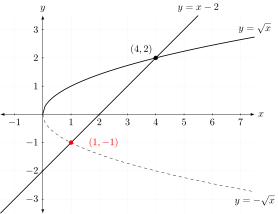

Optimized basic math functions
In C++, like any other programming language, computations are performed using the available set of operators, the intrinsic functions implemented by the compiler, and the set of core mathematical functions provided by the standard C and C++ libraries, or some alternative implementation.
The header, HCCMath.h provides alternatives to many of the core mathematical function that is specified in
the C and C++ standards. All of the functions can be constexpr evaluated, and several offer
runtime performance benefits as well.
HCCMath.h is header only, and does not require linking with Harlinn.Common.Core.lib.

The functions are implemented in the Harlinn::Common::Core::Math namespace.
Unit Tests
Unit tests for constexpr evaluation of the core functions from HCCMath.h are provided in
ConstexprMathTests.cpp.
Harlinn.Common.Core.Math.Tests contains 663 test cases, striving to demonstrate the accuracy of the computations. Be aware that running the release build of the full test suite takes nearly an hour, as several of the tests seeks to determine the result for every possible input, or very large subsets of the possible inputs - comparing the results with those produced by the standard implementation.
Benchmarks
The performance of the functions is benchmarked using the Google benchmark library, and can be verified by building and executing BasicMathBenchmarks included in the Harlinn.Windows solution.
Benchmarks for a single inline function cannot be relied upon to accurately determine how well the function will perform perform in a real application. For release builds, the compiler and linker, employs global optimization strategies, attempting to optimize the operations across all the compilation units. The global optimization strategies will often find optimization opportunities that are very hard to detect and implement manually, and the only way to really determine if one set of functions performs better than another, is to try them out in a real, computationally intensive, application.
It is, however, unlikely that a set of functions that performs worse than another, in a reasonable set of benchmarks, can outperform the other in a real application.
PBRTO a micro optimized raytracing app
PBRTO is a micro optimized version of PBRT-v4, under development
as an example of how the functionality in HCCMath.h, HCCSIMD.h and HCCVectorMath.h can be used to
optimize the performance of real, computationally intensive, apps. It’s now about 91 %
faster than the release build of the original PBRT. more…
Background
The functions were created to explore constexpr evaluation of mathematical expressions, since nothing
improves runtime performance as much as making the compiler calculate the results at compile time.
Since constexpr evaluation doesn’t allow undefined behavior, this can also be used to eliminate
a wide range of subtle, and hard to find, errors in code using HCCMath.h that currently
cannot be constexpr evaluated using the standard libraries.
Much of the code is based on version 0.8.5 of the OpenLibm
mathematical C library used by the Julia programming language.
The library does not include the OpenLibm floating point environment, and relies on the floating point environment provided by the Visual C++ runtime.
Some functions, like Sin, can only perform constexpr evaluation for a subset of the
possible arguments. Sin has no problems with constexpr evaluation for \(\pm 20000^\circ\),
but fails to constexpr evaluate Sin(1.7976931348623158e+308).
The API is template based, which may seem odd, but this helps to reduce the number of
unintended conversions between numeric types. Most functions designed to work with
floating point values do not accept integer values without an explicit cast to
float or double.
Implementation quality
The quality of the implementation is, since it is based on OpenLibm, high. OpenLibm does many things very well, but sometimes the Visual C++ runtime, an intrinsic function, or another alternative implemented by the library, perform better. When this is the case, the library selects the implementation with the best runtime performance.
Since some functions are implemented differently for constexpr evaluation, they will not return
identical results when executed at runtime. The difference is small; and can, in most cases, be ignored,
as in these cases both implementations are based on approximations.
Testing the runtime function evaluation
Changes to the OpenLibm code was required to
enable constexpr evaluation since constructs like (x - x)/(x - x) makes Visual C++ unhappy. So
does gotos, x/0., unions, const, static and volatile declarations; necessitating quite a few changes.
Several of the tests execute the function under test 20 000 times using random generated values, while others try every possible value over the range of values most often used with the function.
The functions in the Math namespace that use the constepr path implementation
at runtime are thoroughly tested, and the tests tries to determine the maximum
deviation between the standard function and the corresponding function in the Math namespace.
Deviation is calculated by the Deviation function below.
The value passed for the first argument is the expected result, usually calculated using
the standard implementation, while the value calculated by the corresponding function
in the Math namespace is passed as the second argument.
inline double Deviation( double first, double second )
{
// If both is NaN, the results don't deviate
if ( std::isnan( first ) )
{
if ( std::isnan( second ) )
{
return 0.0;
}
return std::numeric_limits<double>::infinity( );
}
else if ( std::isnan( second ) )
{
// The second value is NaN, but not the first
return std::numeric_limits<double>::infinity( );
}
if ( std::isinf( first ) )
{
if ( std::isinf( second ) )
{
if ( first > 0. && second > 0. )
{
// Both values are +infinity
return 0;
}
else if ( first < 0. && second < 0. )
{
// Both values are -infinity
return 0;
}
// Opposite signs
return std::numeric_limits<double>::infinity( );
}
// only the first value is infinite
return std::numeric_limits<double>::infinity( );
}
else if ( std::isinf( second ) )
{
// only the second value is infinite
return std::numeric_limits<double>::infinity( );
}
// Avoid division by zero
if ( first != 0.0 )
{
using std::abs;
if ( first <= second )
{
return abs( second - first ) / abs( first );
}
else
{
return abs( first - second ) / abs( first );
}
}
else
{
// When second is very close to zero, the result is zero deviation
constexpr double veryCloseToZero = 5e-323;
auto absSecond = abs( second );
if ( absSecond <= veryCloseToZero )
{
return 0.0;
}
// May still be very close to zero, but will cause the test to fail.
return 1.0;
}
}
Exceptional performance
A few functions outperforms the standard implementation spectacularly, like Exp
which outperforms std::exp by 1200 %.
The two implementations returns the same result for 2261694913 out of 2288746510 cases,
and when tested with double precision floating point argument values, uniformly distributed
over the interval [-744.0, 710.0], the maximum deviation, 1.56426946755e-12
was obtained when passing -717.256469727 as the argument to the functions.
Using SIMD::Traits<T.N>
Some functions, like Hypot, use the SIMD::Traits<T.N> specializations to achieve excellent runtime performance.
template<typename T>
requires IsFloatingPoint<T>
constexpr inline std::remove_cvref_t<T> Hypot( T x, T y, T z ) noexcept
{
if ( std::is_constant_evaluated( ) )
{
return Math::Internal::OpenLibM::FastHypot( x, y );
}
else
{
using FloatT = std::remove_cvref_t<T>;
using Traits = SIMD::Traits<FloatT, 3>;
auto v = Traits::Set( z, y, x );
v = Traits::Mul( v, v );
v = Traits::HSum( v );
v = Traits::Sqrt( v );
return Traits::First( v );
}
}
Using the standard, and the internal, implementation at runtime.
Math::Internal::TanImpl performs about 40 % worse than std::tan, for double precision
floating point values, but Math::Internal::TanImpl beats std::tan, for single precision
floating point values, by more than 60 %, and splitting the execution path between
Math::Internal::TanImpl for single precision floating point values, and std::tan
provides the best solution:
template<typename T>
requires IsFloatingPoint<T>
constexpr inline std::remove_cvref_t<T> Tan( T x ) noexcept
{
using FloatT = std::remove_cvref_t<T>;
if ( std::is_constant_evaluated( ) )
{
if constexpr ( std::is_same_v<FloatT, float> )
{
return Math::Internal::OpenLibM::tanf( x );
}
else
{
return Math::Internal::OpenLibM::tan( x );
}
}
else
{
if constexpr ( std::is_same_v<FloatT, float> )
{
return Math::Internal::OpenLibM::tanf( x );
}
else
{
return std::tan( x );
}
}
}
The runtime execution path for each function is selected based on its performance in the benchmarks.
Basic operations
-
Abswhich returns the absolute value \(|x|\) forx, is implemented for floating point types, signed integers and unsigned integers. Callsstd::absat runtime. -
FModwhich calculate the remainder of a floating point division operation, is implemented for floating point types.FModoutperformsstd::fmodby approximately60% for double precision floating point values, and by40% for single precision floating point values. -
Maxwhich returns the greater of to values, is implemented for floating point types.Maxcallsstd::maxat compile time, and at runtime it calls_mm_max_ssfor single precision floating point values, andstd::maxfor double precision floating point values. This improves the performance, on the average, by10% for single precision floating point values. It varies between2% and30% for each run of the benchmarks. -
Minwhich returns the lesser of to values, is implemented for floating point types.Mincallsstd::minat compile time, and at runtime it calls_mm_min_ssfor single precision floating point values, andstd::minfor double precision floating point values. This improves the performance, on the average, by7% for single precision floating point values. It varies between-2% and20% for each run of the benchmarks. -
IsSameValuechecks for binary equality between two floating point values.
Exponential functions
-
Expreturns e raised to the given power (ex).Expoutperformsstd::expby approximately1200% for double precision floating point values, and by approximately1000% for single precision floating point values.The maximum detected deviation between
std::expandExpis1.18844e-07for single precision floating point values, and2.18599e-16for double precision floating point values, for argument values in the range-9to10, tested with a uniform random distribution of10'000values. -
Logcomputes natural, base e, logarithm (ln x)Logoutperformsstd::logby approximately260% for double precision floating point values, and by approximately400% for single precision floating point values.The maximum detected deviation between
std::logandLogis1.18795e-07for single precision floating point values, and2.04848e-16for double precision floating point values, for argument values in the range0to100000, tested with a uniform random distribution of10'000values. -
Log2base 2 logarithm of the given number (log2x).Log2outperformsstd::log2by approximately270% for double precision floating point values, and by approximately250% for single precision floating point values.The maximum detected deviation between
std::log2andLog2is1.18288e-07for single precision floating point values, and2.1882e-16for double precision floating point values, for argument values in the range0to100000, tested with a uniform random distribution of10'000values. -
Log10computes common (base 10) logarithm (log10x)Log10outperformsstd::log10by approximately360% for double precision floating point values, and by approximately390% for single precision floating point values.The maximum detected deviation between
std::log10andLog10is1.18216e-07for single precision floating point values, and2.0154e-16for double precision floating point values, for argument values in the range0to100000, tested with a uniform random distribution of10'000values.
Power functions
-
Sqrtcomputes square root (√x)Calls
_mm_sqrt_pdor_mm_sqrt_psat runtime.Sqrtoutperformsstd::sqrtby approximately1400% for double precision floating point values, and by approximately1300% for single precision floating point values. -
Hypotcomputes square root of the sum of the squares of two or three numbers.The two argument version of
Hypotoutperformsstd::hypotby approximately270% for double precision floating point values, and by approximately230% for single precision floating point values.The three argument version of
Hypotoutperformsstd::hypotby approximately190% for double precision floating point values, and by approximately320% for single precision floating point values.
Trigonometric functions
Graphic intensive application are highly sensitive to the performance of the trigonometric functions, especially for single precision floating point values.
-
Sincomputes the sine of its argument given in radians.Sincallsstd::sinat runtime for both single and double precision values.The
constexprpath forSinoutperformsstd::sinby approximately100% for single precision floating point values, but performs worse when both the sine and the cosine is calculated for the same value.The maximum deviation between
std::sinand theconstexprpath forSinis1.19182e-07for single precision floating point values, and2.22045e-16for double precision floating point values, tested for all possible single precision floating point argument values for in the range-((2*pi)+epsilon)to((2*pi)+epsilon). -
Coscomputes the cosine of its argument given in radians.Coscallsstd::cosat runtime for both single and double precision values.The
constexprpath forCosoutperformsstd::cosby approximately110% for single precision floating point values, but performs worse when both the sine and the cosine is calculated for the same value.The maximum deviation between
std::cosand theconstexprpath forCosis1.19187e-07for single precision floating point values, and2.22044e-16for double precision floating point values, tested for all possible single precision floating point argument values for in the range-((2*pi)+epsilon)to((2*pi)+epsilon). -
Tancomputes the tangent of its argument given in radians.Tanoutperformsstd::tanby approximately60% for single precision floating point values,Tancalls std::tan at runtime, with a consistent performance penalty of about20% compared to callingstd::tandirectly for double precision floating point values.The maximum deviation between
std::tanand theconstexprpath forTanis1.19209e-07for single precision floating point values, and2.22045e-16for double precision floating point values, tested for all possible single precision floating point argument values for in the range-((2*pi)+epsilon)to((2*pi)+epsilon). -
ASincomputes arc sine of its argument.ASinoutperformsstd::asinby approximately20% for double precision floating point values, and by approximately30% for single precision floating point values.The maximum deviation between
std::asinandASinis2.27673e-07for single precision floating point values, and2.22044e-16for double precision floating point values, tested for all possible single precision floating point argument values for in the range-1.0to1.0. -
ACoscomputes the arc cosine of its argument.ACosoutperformsstd::acosby approximately30% for double precision floating point values, and by approximately50% for single precision floating point values.The maximum deviation between
std::acosandACosis1.19209e-07for single precision floating point values, and2.22044e-16for double precision floating point values, tested for all possible single precision floating point argument values for in the range-1.0to1.0. -
ATancomputes the arc tangent of its argument.ATanoutperformsstd::atanby approximately5% for double precision floating point values, and by approximately30% for single precision floating point values.The maximum detected deviation between
std::atanandATanis0.0for single precision floating point values, and0.0for double precision floating point values, tested with a uniform random distribution of10'000values in the range-10'000to10'000. -
ATan2computes the arc tangent ofy/x, its two arguments, using signs to determine quadrants.ATan2outperformsstd::atan2by approximately20% for double precision floating point values, and by approximately40% for single precision floating point values.The maximum detected deviation between
std::atan2andATan2is0.0for single precision floating point values, and0.0for double precision floating point values, tested with a uniform random distribution of10'000values in the range-10'000to10'000.
Nearest integral value floating point operations
-
Ceilcomputes the nearest integral value not less than the given value.Ceilcalls__ceilor__ceilfat runtime. -
Floorcomputes the nearest integral value not greater than the given value.Floorcalls__flooror__floorfat runtime. -
Trunccomputes the nearest integral value not greater in magnitude than the given value.Trunccalls__truncfat runtime for single precision floating point numbers, and calls_mm_round_pddouble precision floating point numbers, improving performance by320%. -
Roundcomputes the nearest integral value, rounding away from zero in halfway cases.Roundcalls__roundfat runtime for single precision floating point numbers, and calls_mm_round_pddouble precision floating point numbers, improving performance by500%.
Floating point manipulation functions
-
FRExpdecomposes a number into significand and base-2 exponent.FRExpoutperformsstd::frexpby approximately450% for double precision floating point values, and by approximately550% for single precision floating point values. -
ModFdecomposes a number into integer and fractional parts.ModFoutperformsstd::modfby approximately60% for double precision floating point values, and by approximately50% for single precision floating point values. -
ScaleByNmultiplies a number by FLT_RADIX raised to a power.ScaleByNoutperformsstd::scalbnby approximately90% for double precision floating point values, and by approximately170% for single precision floating point values. -
NextAfternext representable floating-point value towards the given value.NextAfteroutperformsstd::nextafterby approximately40% for double precision floating point values, and by approximately90% for single precision floating point values. -
NextUpReturn the smallest floating point number y of the same type as x such that x < y. If no such y exists, e.g. if x is Inf or NaN, then return x.The standard C++ implementation is
std::nextafter( x, std::numeric_limits<double>::infinity( ) ).NextUpoutperformsstd::nextafterby approximately1400% for double precision floating point values, and by approximately1300% for single precision floating point values. -
NextDownReturn the largest floating point number y of the same type as x such that y < x. If no such y exists, e.g. if x is -Inf or NaN, then return x.The standard C++ implementation is
std::nextafter( x, -std::numeric_limits<double>::infinity( ) ).NextDownoutperformsstd::nextafterby approximately210% for double precision floating point values, and by approximately330% for single precision floating point values. -
CopySigncopies the sign of a floating point value.NextDownoutperformsstd::nextafterby approximately300% for double precision floating point values, and by approximately10% for single precision floating point values.
Classification and comparison
-
IsNaNchecks if the given number is NaN.IsNaNcallsstd::isnanat runtime. -
IsInfchecks if the given number is infinite.IsInfcallsstd::isinffor double precision floating point values, and outperformsstd::isinffor single precision floating point values by40%. -
SignBitchecks if the given number is negative.SignBitoutperformsstd::signbitby approximately50% for both double and single precision floating point values.
Other computations
-
ClampIf the a value is within [minimumValue, maximumValue], the function returns the value, otherwise it returns the nearest boundary.Clampcallsstd::clampat runtime. -
LerpComputes the linear interpolation between a and b, if the parameter t is inside [0, 1), the linear extrapolation otherwise, i.e. the result of a + t * ( b - a ) with accounting for floating point calculation imprecision.Lerpcallsstd::lerpat runtime.